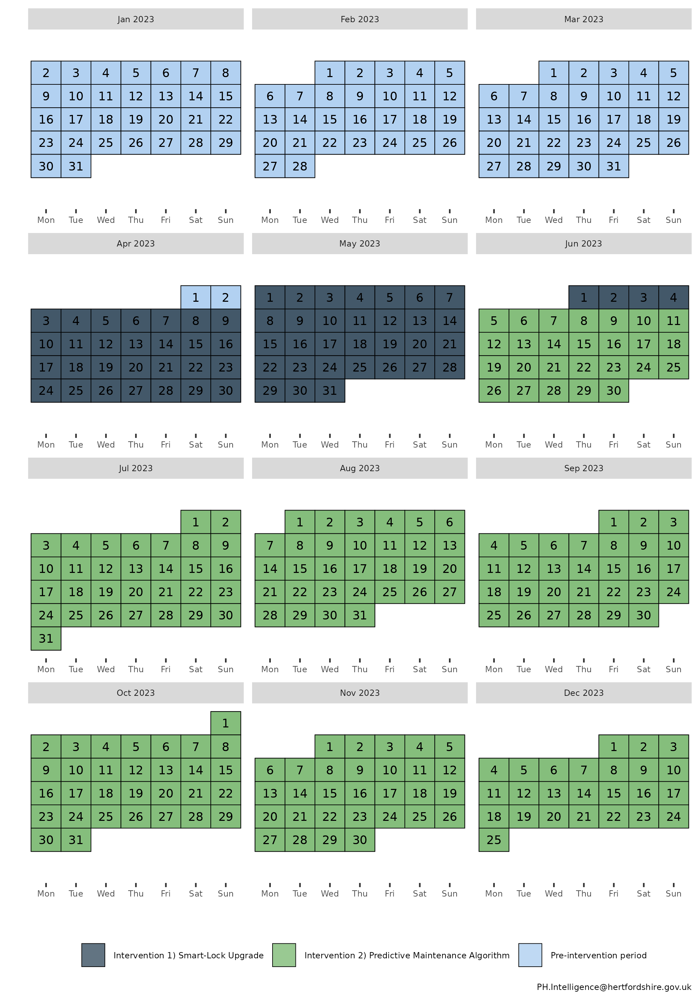
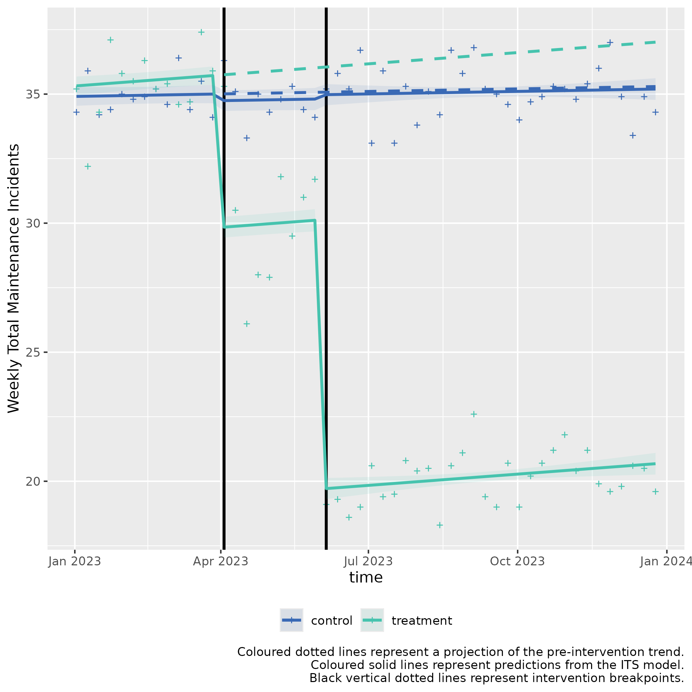

Multiple ITS control introduction for level change (two-stage)
ITScontrol_demonstration_level.RmdUsage
This is a basic example which shows how to solve a common problem with a two‑stage interrupted time series with a control, for a level (step) change hypothesis.
Background:
MetroBike City and RiverCycle District operate
bicycle‑sharing networks in neighbouring urban areas. Both systems use
similar bicycles, have comparable ridership patterns, and maintain
similar maintenance schedules.
In early 2023, MetroBike City implemented two sequential interventions aimed at reducing weekly maintenance incidents (e.g., damaged gears, brake faults, electronic lock failures). RiverCycle District made no fleet-wide changes during the same period and serves as the control.
This example illustrates a scenario where each intervention leads to a significant immediate “step” decrease in the number of maintenance incidents, without slope changes.
Intervention 1: Smart‑Lock Upgrade (Fleet‑wide)
- Objective: Reduce lock‑related maintenance tickets.
- Start Date: April 3, 2023
- Duration: 2 months
- Description: All MetroBike bicycles received new smart‑locks with improved sensors, reducing jammed/failed locking events.
- Measurement: Weekly total maintenance incidents.
Intervention 2: Predictive Maintenance Algorithm
- Objective: Reduce mechanical faults through early detection.
- Start Date: June 5, 2023
- Duration: 2 months
- Description: The operator introduced an AI‑supported predictive system identifying bicycles likely to require maintenance before breakdowns occur.
- Measurement: Weekly total maintenance incidents.
Controlled Interrupted Time Series Design (2 stage)
Step 1: Baseline Period
Duration: January 1, 2023 – April 2, 2023
Weekly maintenance incident counts collected.
Step 2: Intervention 1 Period
- Duration: April 3, 2023 – June 4, 2023
Step 3: Intervention 2 Period
- Duration: June 5, 2023 – December 31, 2023
The calendar plot below summarises the timeline of the interventions:

Step 1) Loading data
Sample data can be loaded from the package for this scenario through
the bundled dataset its_data_bike_programme.
This sample dataset demonstrates the format your own data should be in.
You can observe that in the Date column, that the dates
are of equal distance between each element, and that there are two rows
for each date, corresponding to either control or
treatment in the group_var variable.
control and treatment each have three periods,
a Pre-intervention period detailing measurements of the
outcome prior to any intervention, the first intervention detailed by
Intervention 1) Smart-Lock Upgrade, and the second
intervention, detailed by
Intervention 2) Predictive Maintenance Algorithm.
Step 2) Transforming the data
The data frame should be passed to
multipleITScontrol::tranform_data() with suitable arguments
selected, specifying the names of the columns to the required variables
and starting intervention time points.
intervention_dates <- c(as.Date("2023-04-03"), as.Date("2023-06-05"))
transformed_data <-
multipleITScontrol::transform_data(df = its_data_bike_programme,
time_var = "Date",
group_var = "group_var",
outcome_var = "score",
intervention_dates = intervention_dates)Returns the initial data frame with a few transformed variables needed for interrupted time series.
#> # A tibble: 104 × 13
#> # Groups: category [2]
#> time category Period outcome x time_index level_pre_intervention
#> <date> <chr> <chr> <dbl> <dbl> <int> <dbl>
#> 1 2023-01-02 treatment Pre-int… 35.2 1 1 1
#> 2 2023-01-02 control Pre-int… 34.3 0 1 1
#> 3 2023-01-09 treatment Pre-int… 32.2 1 2 1
#> 4 2023-01-09 control Pre-int… 35.9 0 2 1
#> 5 2023-01-16 treatment Pre-int… 34.3 1 3 1
#> 6 2023-01-16 control Pre-int… 34.2 0 3 1
#> 7 2023-01-23 treatment Pre-int… 37.1 1 4 1
#> 8 2023-01-23 control Pre-int… 34.4 0 4 1
#> 9 2023-01-30 treatment Pre-int… 35.8 1 5 1
#> 10 2023-01-30 control Pre-int… 35 0 5 1
#> # ℹ 94 more rows
#> # ℹ 6 more variables: level_1_intervention <dbl>,
#> # level_1_intervention_internal <dbl>, slope_1_intervention <dbl>,
#> # level_2_intervention <dbl>, level_2_intervention_internal <dbl>,
#> # slope_2_intervention <dbl>Step 3) Fitting ITS model
The transformed data is then fit using
multipleITScontrol::fit_its_model(). Required arguments are
transformed_data, which is simply an unmodified object
created from multipleITScontrol::transform_data() in the
step above; a defined impact model, with current options being either
‘slope’, `level, or ‘levelslope’, and the
number of interventions.
fitted_ITS_model <-
multipleITScontrol::fit_its_model(transformed_data = transformed_data,
impact_model = "level",
num_interventions = 2)
fitted_ITS_modelGives a conventional model output from nlme::gls().
#> Generalized least squares fit by REML
#> Model: reformulate(termlabels = termlabels, response = "outcome")
#> Data: transformed_data
#> Log-restricted-likelihood: -166.5729
#>
#> Coefficients:
#> (Intercept) x
#> 34.903728273 0.382223093
#> time_index level_1_intervention_internal
#> 0.007486977 -0.260822758
#> level_2_intervention_internal x:time_index
#> 0.163641669 0.025725172
#> x:level_1_intervention_internal x:level_2_intervention_internal
#> -5.644619266 -10.591855266
#>
#> Correlation Structure: ARMA(5,2)
#> Formula: ~time_index | x
#> Parameter estimate(s):
#> Phi1 Phi2 Phi3 Phi4 Phi5 Theta1
#> 0.12363661 0.30972293 -0.28809641 -0.21117280 0.07416372 -0.18933534
#> Theta2
#> -0.38208412
#> Degrees of freedom: 104 total; 96 residual
#> Residual standard error: 1.200901Step 4) Analysing ITS model
However, the coefficients given do not make intuitive sense to a lay
person. We can call the package’s internal
multipleITScontrol::summary_its() which modifies the
summary output by renaming the coefficients, variable names, and other
model-related terms to make them easier to interpret in the context of
interrupted time series (ITS) analysis.
my_summary_its_model <- multipleITScontrol::summary_its(fitted_ITS_model)
my_summary_its_model#> Generalized least squares fit by REML
#> Model: reformulate(termlabels = termlabels, response = "outcome")
#> Data: transformed_data
#> Log-restricted-likelihood: -166.5729
#>
#> Coefficients:
#> A) Control y-axis intercept
#> 34.903728273
#> B) Pilot y-axis intercept difference to control
#> 0.382223093
#> C) Control pre-intervention slope
#> 0.007486977
#> G) Control intervention 1 level
#> -0.260822758
#> K) Control intervention 2 level
#> 0.163641669
#> D) Pilot pre-intervention slope difference to control
#> 0.025725172
#> H) Pilot intervention 1 level difference to control
#> -5.644619266
#> L) Pilot intervention 2 level difference to control
#> -10.591855266
#>
#> Correlation Structure: ARMA(5,2)
#> Formula: ~time_index | x
#> Parameter estimate(s):
#> Phi1 Phi2 Phi3 Phi4 Phi5 Theta1
#> 0.12363661 0.30972293 -0.28809641 -0.21117280 0.07416372 -0.18933534
#> Theta2
#> -0.38208412
#> Degrees of freedom: 104 total; 96 residual
#> Residual standard error: 1.200901
summary(my_summary_its_model)#> Generalized least squares fit by REML
#> Model: reformulate(termlabels = termlabels, response = "outcome")
#> Data: transformed_data
#> AIC BIC logLik
#> 365.1459 406.1755 -166.5729
#>
#> Correlation Structure: ARMA(5,2)
#> Formula: ~time_index | x
#> Parameter estimate(s):
#> Phi1 Phi2 Phi3 Phi4 Phi5 Theta1
#> 0.12363661 0.30972293 -0.28809641 -0.21117280 0.07416372 -0.18933534
#> Theta2
#> -0.38208412
#>
#> Coefficients:
#> Value Std.Error
#> A) Control y-axis intercept 34.90373 0.1919095
#> B) Pilot y-axis intercept difference to control 0.38222 0.2714010
#> C) Control pre-intervention slope 0.00749 0.0130327
#> G) Control intervention 1 level -0.26082 0.3097059
#> K) Control intervention 2 level 0.16364 0.3678123
#> D) Pilot pre-intervention slope difference to control 0.02573 0.0184310
#> H) Pilot intervention 1 level difference to control -5.64462 0.4379903
#> L) Pilot intervention 2 level difference to control -10.59186 0.5201652
#> t-value p-value
#> A) Control y-axis intercept 181.87600 0.0000
#> B) Pilot y-axis intercept difference to control 1.40833 0.1623
#> C) Control pre-intervention slope 0.57448 0.5670
#> G) Control intervention 1 level -0.84216 0.4018
#> K) Control intervention 2 level 0.44491 0.6574
#> D) Pilot pre-intervention slope difference to control 1.39575 0.1660
#> H) Pilot intervention 1 level difference to control -12.88755 0.0000
#> L) Pilot intervention 2 level difference to control -20.36248 0.0000
#>
#> Correlation:
#> A)Cy-i BPyidtc C)Cp-s
#> B) Pilot y-axis intercept difference to control -0.707
#> C) Control pre-intervention slope -0.502 0.355
#> G) Control intervention 1 level -0.418 0.295 -0.347
#> K) Control intervention 2 level 0.498 -0.352 -0.767
#> D) Pilot pre-intervention slope difference to control 0.355 -0.502 -0.707
#> H) Pilot intervention 1 level difference to control 0.295 -0.418 0.245
#> L) Pilot intervention 2 level difference to control -0.352 0.498 0.542
#> G)Ci1l K)Ci2l DPpsdtc
#> B) Pilot y-axis intercept difference to control
#> C) Control pre-intervention slope
#> G) Control intervention 1 level
#> K) Control intervention 2 level -0.192
#> D) Pilot pre-intervention slope difference to control 0.245 0.542
#> H) Pilot intervention 1 level difference to control -0.707 0.136 -0.347
#> L) Pilot intervention 2 level difference to control 0.136 -0.707 -0.767
#> HPi1ldtc
#> B) Pilot y-axis intercept difference to control
#> C) Control pre-intervention slope
#> G) Control intervention 1 level
#> K) Control intervention 2 level
#> D) Pilot pre-intervention slope difference to control
#> H) Pilot intervention 1 level difference to control
#> L) Pilot intervention 2 level difference to control -0.192
#>
#> Standardized residuals:
#> numeric(0)
#> attr(,"label")
#> [1] "Standardized residuals"
#>
#> Residual standard error: 1.200901
#> Degrees of freedom: 104 total; 96 residual
sjPlot::tab_model(
my_summary_its_model,
dv.labels = "Weekly Total Maintenance Incidents",
show.se = TRUE,
collapse.se = TRUE,
linebreak = FALSE,
string.est = "Estimate (std. error)",
string.ci = "95% CI",
p.style = "numeric_stars"
)| Weekly Total Maintenance Incidents | |||
|---|---|---|---|
| Predictors | Estimate (std. error) | 95% CI | p |
|
34.90 *** (0.19) | 34.52 – 35.28 | <0.001 |
|
0.38 (0.27) | -0.16 – 0.92 | 0.162 |
|
0.01 (0.01) | -0.02 – 0.03 | 0.567 |
|
-0.26 (0.31) | -0.88 – 0.35 | 0.402 |
|
0.16 (0.37) | -0.57 – 0.89 | 0.657 |
|
0.03 (0.02) | -0.01 – 0.06 | 0.166 |
|
-5.64 *** (0.44) | -6.51 – -4.78 | <0.001 |
|
-10.59 *** (0.52) | -11.62 – -9.56 | <0.001 |
| Observations | 104 | ||
| R2 | 0.969 | ||
|
|||
The predictor coefficients elucidate a few things:
First intervention:
G) Control intervention 1 level describes the step change that occurs at the intervention break point in the control group at the start of the first intervention (-0.26).
H) Pilot intervention 1 level describes the difference in the step change that occurs at the intervention timepoint in the control group for the first intervention compared to the pilot (-5.64).
To ascertain the level for the pilot data, we add to the control coefficient step of the pilot data, the coefficients G) Control intervention 1 level and H) Pilot intervention 1 level difference to control. G (-0.26) + H (-5.64) = -5.9 is the step change during the first intervention for the pilot data.
The coefficient H) Pilot intervention 1 level difference to control, in essence acts a t-test of whether there is a statistically significant difference between the step of the pilot data and the control. Mathemetically it is equivalent to a two-sample t-test.
In the regression model results above, We can see there is a statistically significant difference via the p-value for coefficient H.
Second intervention:
K) Control intervention 2 level describes the step change that occurs at the intervention break point in the control group at the start of the second intervention (0.16).
L) Pilot intervention 2 level difference to control” describes the difference in the step change that occurs at the intervention timepoint in the pilot group for the second intervention compared to the control (-10.59).
In the regression model results above, We can see there is a statistically significant difference via the p-value for coefficient L.
Step 5) Fitting Predictions
We can fit predictions with the created model which project the
pre-intervention period into the post-intervention period by using the
model coefficients using
multipleITScontrol::generate_predictions().
transformed_data_with_predictions <- generate_predictions(transformed_data, fitted_ITS_model)
transformed_data_with_predictionsStep 6) Plotting the results
We can use the predicted values and map the segmented regression lines which compare whether an intervention had a statistically significant difference.
its_plot(model = my_summary_its_model,
data_with_predictions = transformed_data_with_predictions,
time_var = "time",
intervention_dates = intervention_dates,
y_axis = "Weekly Total Maintenance Incidents")